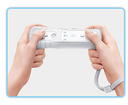
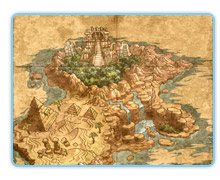
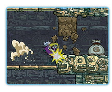

基本的にはＷｉｉリモコンを横持ちにして、往年のアクションゲームのように操作するようです。走ったり、ジャンプしたり、タックルしたり、
おしりでアタックしたりといった多彩なアクションが用意されています。
"シェイク"は両手で横持ちしたWiiリモコンを、そのまま縦に振る動作のこと。
一瞬縦に振るとワリオが地面にパンチして地震を起こしたり、コイン袋を掴んで振るとたくさんコインが飛び出たりと、ボタン操作で行き詰まったら、"シェイク"をすれば新たな活路が開ける、ということがあるみたいです。
オーソドックスなアクションだけではないのでやや戸惑いましたが、最初のステージがチュートリアルになっているので、操作を覚えるまで何度か繰り返し練習。スムーズに動けるようになってから、いざ次のステージへと旅立ちます。

ゲーム中に集めたコインで地図を買うと、ステージが増えていきます。
お金もないし、初心者はカンタンなところから遊ぶのがセオリーかな？と、
いちばんはじめの「グラナン大陸」の地図を購入してチャレンジしてみました。
ステージのあちこちにあるコイン袋をシェイクしてコインを集め、
お宝を見つけ、メルフルが囚われている場所までらくらく到達しました。
でも、ここからが手に汗握る展開になろうとは…そのときはわかっていませんでした。
メルフルを解放すると、突如残り時間表示が出現。
音楽も変わっちゃうし、これはもしや急いで帰らないと、マズイことに？と、近くにあった「ダッシュどかん」をくぐって、ワリオは一目散にスタート地点へ猛ダッシュを開始。
帰り道の上空にコインがあったり、宝箱があったりして、「あれどうやって取るの〜！？」と身を乗り出すものの取れないまま、あっという間にゴールです……。やや呆然としながら、「行きは良い良い帰りは怖い」というフレーズが頭の中をグルグル。クリアしたというのにやり残し感でいっぱいに。
これは、もう一度トライするしかない。

やり直して気付きました。実は色んなところに、コインやお宝や通り道があったことに。メルフルを解放するまでは、時間制限がないのなら…ということで、じっくり探索に向かいます。隅から隅まで移動してみると、はじめは全然気付かなかった場所が、実は障害物を破壊すれば入ることができたり、何度挑戦しても到達できなかった場所に、別のシンプルな行き方があったり、一度では気付かなかったもろもろの部分が見えて来ました。
それでも一度だけでは、お宝を集め切れませんでした、『○分○秒までにクリア』とか『コイン○○枚ゲット』なんてミッションも設定されているのですが、こちらも達成できていません。自分なりに「今回はこのミッションを達成するぞ」と決めて遊ぶのが良さそうですね。
２Ｄアクションとしては非常にわかりやすくまた王道かつ硬派な手ごたえと、数々のやり込み要素のお陰で、やればやるほど味わい深いゲームでした！